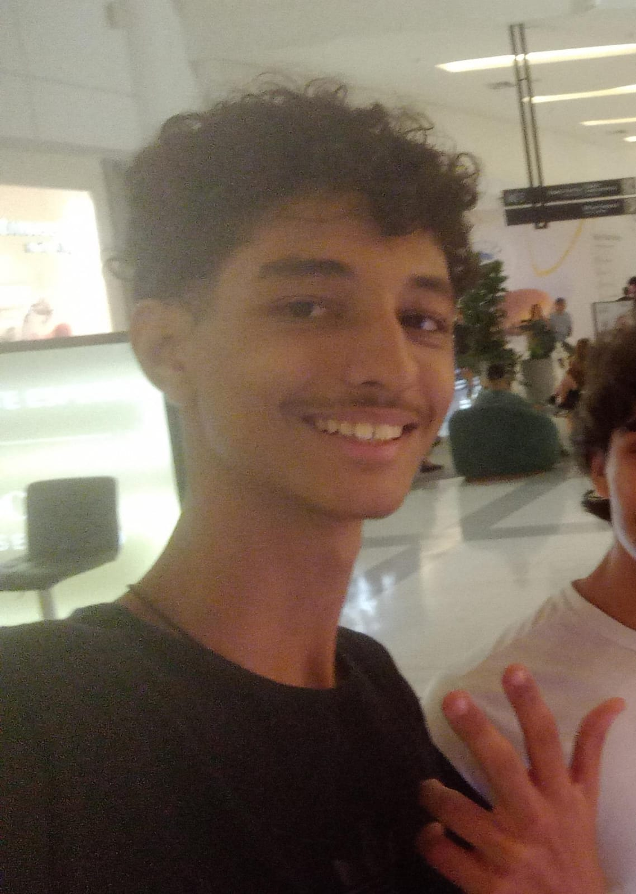
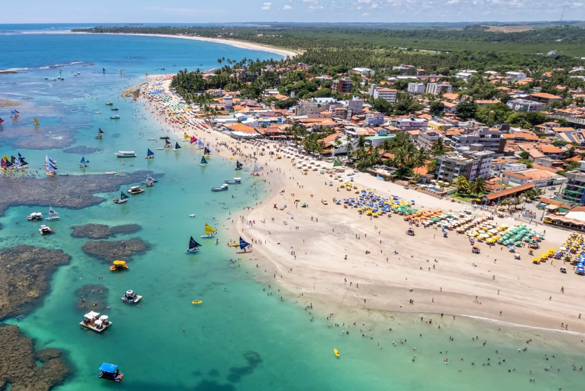
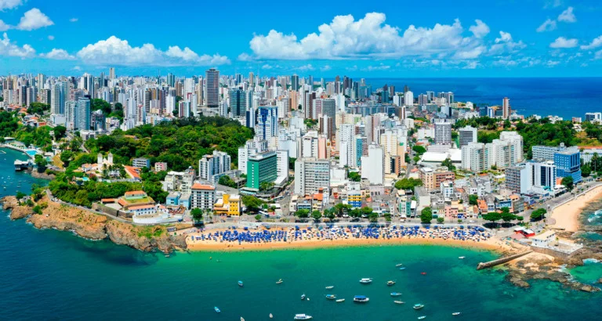
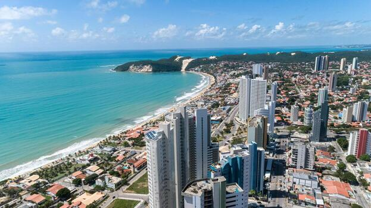
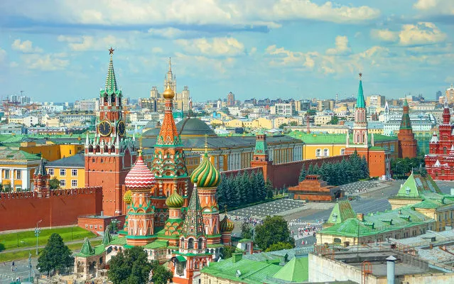
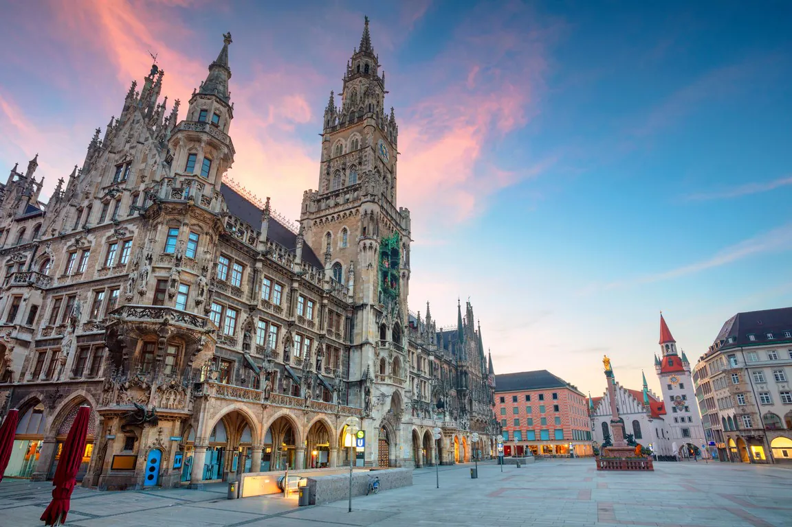
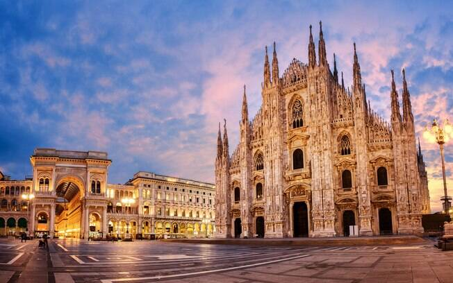

Gustavo Melo de Souza

Curiosidades
- Eu passo mais tempo refinando uma frase específica do que muitas pessoas passam fazendo um trabalho inteiro.
- Eu tenho o talento de pedir um texto extremamente formal e, cinco minutos depois, pedir um meme completamente caótico para inteligências articiais.
- Eu consigo ser organizado e impulsivo ao mesmo tempo.
- Eu provavelmente levo jogos mais a sério do que deveria em alguns momentos.
- Eu tenho o costume de imaginar cenários inteiros na cabeça antes mesmo de começar um projeto.
- Eu gosto quando algo parece inteligente sem precisar ficar tentando provar isso toda hora.
- Eu tenho fases em que fico extremamente focado e outras em que simplesmente desapareço da rotina.
Alguns lugares que ja fui
- Porto de Galinhas, Ipojuca, Pernambuco

Porto de Galinha
- Salvador, Bahia, Brasil

Salvador
- Natal, Rio Grande do Norte, Brasil

Natal
Lugares que desejo viajar
- Moscou, Rússia

Moscou
- Munique, Alemanha

Munique
- Milão, Itália

Milão
Voltar para página inicial
Voltar